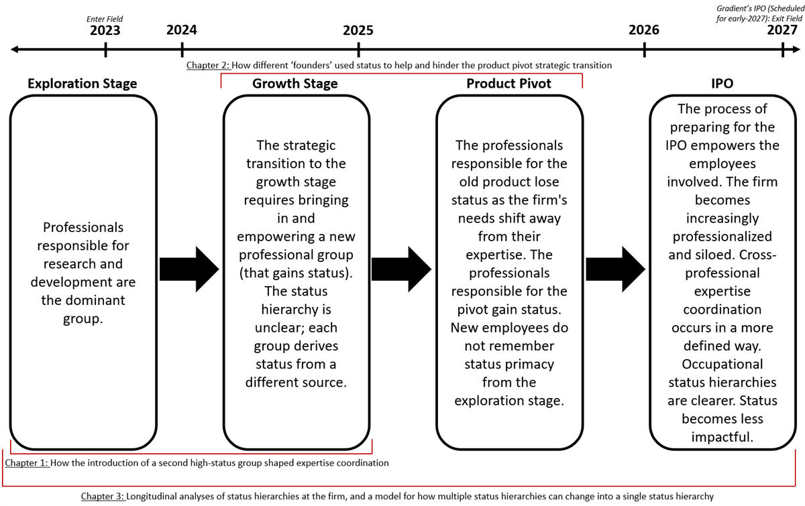

Overview
I study how occupational status hierarchies shape the coordination of expertise and innovation in firms during periods of strategic transition. Coordinating expertise across occupational groups is necessary for the success of modern firms—and for the development of the most consequential technologies of our moment, from generative AI to nuclear fusion. But status hierarchies are not fixed: when a firm changes what it does—when it moves from discovery to growth, pivots its product, or prepares to go public—the expertise it needs changes, and the standing of the occupational groups that hold that expertise changes with it.
Dissertation
Alternating Currents: Occupational Status Hierarchies, Expertise Coordination, and Strategic Transitions
Finalist, 2026 INFORMS/Organization Science Best Dissertation Proposal Competition
My dissertation examines how occupational status hierarchies shape the coordination of expertise and innovation in firms during periods of strategic transition. Using four years of ethnographic data (more than 1,600 hours of observation and 300 interviews, from the firm’s pre-revenue stage through its IPO process), it follows Gradient (a pseudonym), a deep-tech startup, through three strategic transitions—from scientific discovery to growth, a product pivot to support the AI data center boom, and a forthcoming IPO—to explore how these transitions reshape occupational status hierarchies and expertise coordination within an organization, and the consequences for firm strategy and innovation.
Alternating Currents argues that as organizational needs change, multiple orderings of status can arise. I develop a dynamic model of how these hierarchies emerge, diverge into multiple coexisting hierarchies with different sources of status, and ultimately converge—and I trace how these shifts affect expertise coordination and shape the organization’s strategic transitions.

Job Market Paper
“Suits and Lab Coats: Epistemic Privileging and Its Impact on Strategic Transition in a ‘Deep-Tech’ Battery Startup”
Under review at Strategic Management Journal · Finalist, Best Student-Led Paper, Kauffman Best Paper Awards in Entrepreneurial Cognition, Academy of Management (MOC Division), 2024 · Draft available upon request
This paper begins from a puzzling observation during Gradient’s strategic transition to the growth stage: the firm’s high-status battery scientists began micromanaging and seeking control over marketing, public relations, and event-planning tasks outside their expertise and job responsibilities—tasks that prior scholarship suggests they would avoid. We theorize this pattern as epistemic privileging: a process in which high-status technical experts systematically disregard more relevant expertise from outside their group to protect their reputation among peers beyond the firm. The process unfolds in three phases—task sanctification, technocratic overreach, and overriding expertise—and it impeded Gradient’s strategic transition by damaging morale, skewing decisions toward the experts’ reputational priorities, and delaying task execution.
Under Review
A second stream of my research asks the same question beyond the firm: whose voice and expertise counts. Inside Gradient, status determines whose expertise counts; beyond it, the same contest plays out between experts, intermediaries (e.g., media organizations, influencers, and algorithmically curated platforms), and the public—dynamics that speak to what scholars are calling the ‘crisis of expertise.’
“Expert Authority by Popularity: How Technological Developments and Changes in the Media Have Given Rise to a Novel Mechanism for Evaluating Expertise”
Under review at Organization Science
This paper theorizes expert authority by popularity, in which audiences look to their peers—rather than traditional markers such as credentials—to evaluate expertise. I argue that, for some audiences, the typical relationship between audience and expert authority has inverted: rather than expert authority attracting an audience, audiences can become the source of expert authority.
“Participant Pseudonymity in the Age of AI”
Under review at Organization Studies
This paper examines an emerging issue in research design: LLMs can now cheaply and reliably de-pseudonymize partner organizations in management research and case studies.
“Shifting Currents: Deep-Tech Firms and Strategic Transitions”
Under review at Harvard Business Review
A practitioner article drawn from my dissertation research on how deep-tech firms navigate strategic transitions.
Working Papers
“Founder Mode as a ‘Cultural Anchor’: Understanding How Startup Culture and Processes of Authority Attenuate the Negative Impacts of Micromanagement by Founders and Senior Technical Employees”
In preparation · Presented at the Academy of Management Annual Meeting (2025) and the Berkeley Culture Connect Conference (2026)
A dissertation chapter investigating how Gradient’s executives, with varying effectiveness, used their status and cultural positionality as ‘founders’ to shape employees’ responses to the firm’s product pivot.
“Direct Current: A Dynamic Model of How Occupational Status Hierarchies Emerge, Diverge, and Converge”
In preparation
The final empirical chapter of my dissertation, this paper examines Gradient’s occupational status hierarchies longitudinally and develops a generalizable process model of changing occupational status hierarchies and their sources of status.
Publications
Benjamin-Pollak, N.A., & Karunakaran, A. (2025). “Expert authority and the public sphere: Media intermediaries, professional norm violation, and the market for expertise.” In K. T. Elmholdt, R. Huising, & E. I. Mäkinen (Eds.), Expertise in and around organizations: The changing constitution and ecology of expertise (Research in the Sociology of Organizations, Vol. 97, pp. 249–269). Emerald Publishing. Open access.
This chapter develops a model of expert amplification, showing how professional norms and media intermediaries skew which experts are selected and represented to the public—in ways uncorrelated with underlying expert quality.